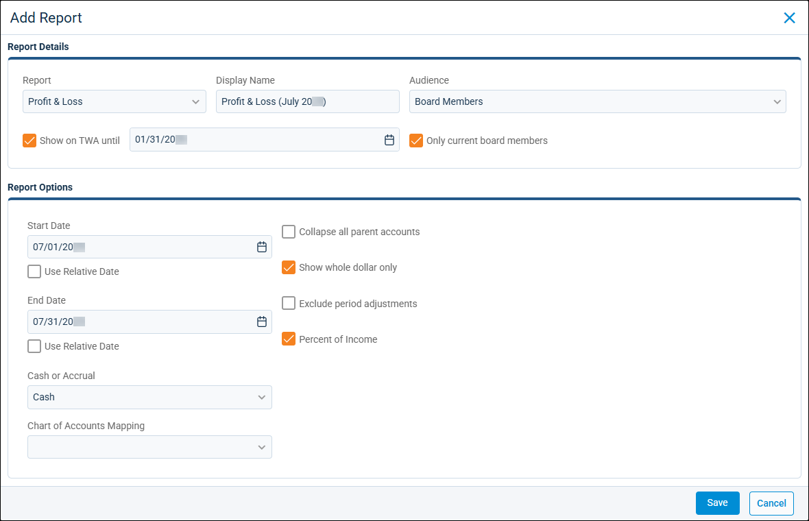
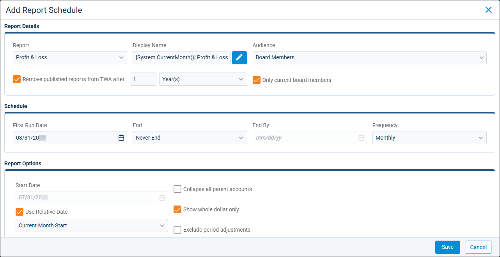

Source: https://rmxhelp.rentmanager.com/Topics/Express/KB/Association-TWA-Reports.htm
Publish Association Reports to Tenant Web Access (TWA)
If you need to share reports with tenants of a homeowners association (HOA), you can publish relevant reports directly to the Tenant Web Access (TWA) portal. This makes it easy for all residents to log in to their TWA account and view their respective reports. Additionally, by directly providing the documents this way, issues like emails going missing are bypassed completely. You can also limit who can view reports in TWA, allowing you to publish information to only board members or members of select committees.
Reports can either be published a single time, or can be set up to automatically generate on a recurring basis for information that is routinely required. For example, you may want to publish a recurring Delinquency report for board members at the end of every month. Alternatively, you may want to publish a one-time report for Bills Paid at the request of a specific committee that gives them a snapshot of a given week, but is not something they would want generated regularly or more often than they already do.
Related Privileges
| Group | Privilege | Column |
|---|---|---|
| Properties/Units | Properties | View |
| Letter/Email Templates/Reports/Packets | Run reports | Enabled |
| Run accounting reports | Enabled |
Additionally, on the Reports tab, you must have access to the report(s) you need to publish.
For more information, refer to Control User Access.
To publish association reports to TWA, go to  arrow_forward Rental Info arrow_forward General arrow_forward Properties and select an association-type property.
arrow_forward Rental Info arrow_forward General arrow_forward Properties and select an association-type property.
Publish a One-Time Report
To publish an individual report to TWA, do the following:
-
On the action bar to the right, select
 arrow_forward Published TWA Reports.
arrow_forward Published TWA Reports.
The Association - Published TWA Reports pop-up displays. -
Click
 Add Report.
Add Report.
-
In the Report Details tile, enter information in the following fields:
Field Description Audience
The tenants who can view the published report in TWA.
<All Tenants>
The report is visible to all tenants at the property. This includes tenants that are not a board member or part of a committee.
Board Members
The report is visible to tenants listed as board members at the property. To further limit the report's visibility, select Only current board members.
Committees
The report is visible to tenants listed as committee members for the selected committees at the property. To further limit the report's visibility, select Only current committee members.
Display Name
The name of the report that displays to TWA users. For example, if you are publishing a Profit & Loss report for July 2026, you could distinguish it from past reports by entering July 2026 Profit & Loss.
Report
The report being generated.
Show on TWA until
The date on which this report can no longer be viewed in TWA by the selected Audience.
More Information
If you wish to make this report available again after this expiration date, you can go to the property's Association - Published TWA Reports pop-up, select Show Expired, then click the report and change this date.
-
In the Report Options tile, select the options for the report being published to TWA.
More Information
When setting report dates, you can either set a custom date range, or select Use Relative Date. A custom date range generates a report that examines data from the same date range every time it is run. Relative dates allow you to generate reports with up-to-date information based on when the report was run. For example, if you run a report in August 2026 and select Last Month Start and Last Month End in the date fields, the report generates with information from July 1–31 2026.
-
Click Save.
The report is published to the selected audience's TWA accounts.
Schedule a Recurring Report
To create a recurring schedule that publishes a report on a regular basis, do the following:
-
On the action bar to the right, select
arrow_forward TWA Report Schedules.
The Association - Scheduled TWA Reports pop-up displays. -
Click
Add Report.
-
In the Report Details tile, enter information in the following fields:
Field Description Audience
The tenants who can view the published report in TWA.
<All Tenants>
The report is visible to all tenants at the property.
Board Members
The report is visible to only tenants listed as board members at the property. To limit the report's visibility to only active board members, select Only current board members.
Committees
The report is visible to only tenants listed as committee members at the property. To limit the report's visibility to only active board members, select Only current committee members.
Display Name
The name of the report that displays to TWA users. To open the Script Builder for scripting assistance, click
 . For example, if you are scheduling a Profit & Loss report to be published every current month, you could distinguish it from past reports by entering [System.Date("mmmm yyyy")] Profit & Loss, which adds the month and year that the report was published to the title (e.g., July 2026 Profit & Loss).
. For example, if you are scheduling a Profit & Loss report to be published every current month, you could distinguish it from past reports by entering [System.Date("mmmm yyyy")] Profit & Loss, which adds the month and year that the report was published to the title (e.g., July 2026 Profit & Loss).Remove published reports from TWA after
The amount of time that this report can be viewed in TWA by the selected Audience, in Month(s) or Year(s).
More Information
If you wish to make this report available again after this expiration date, you can go to the property's Association - Published TWA Reports pop-up, select Show Expired, then click the report and change this date.
Report
The report being generated.
-
In the Schedule tile, establish the recurrence for this report schedule.
Field Description End
Indicate when or if the report schedule should end.
End By
Prevents the recurring report from being published on or after the date entered in the End By field.
Never End
The recurring report is published indefinitely.
First Run Date
The date that the report schedule creates the first report published to TWA. This date is important as it determines when the next reports are run and what dates will be included when using relative dates.
Frequency
How often the report is published to TWA (Monthly, Quarterly, Annually, or One-time).
-
In the Report Options tile, select the options for the report being published to TWA.
More Information
When setting report dates, you can either set a custom date range, or select Use Relative Date. A custom date range generates a report that examines data from the same date range every time it is run. Relative dates allow you to generate reports with up-to-date information based on when the report was run. For example, if you run a report in August 2026 and select Last Month Start and Last Month End in the date fields, the report generates with information from July 1–31 2026.
-
Click Save.
The report schedule is saved and begins publishing the report TWA based on your selected options.